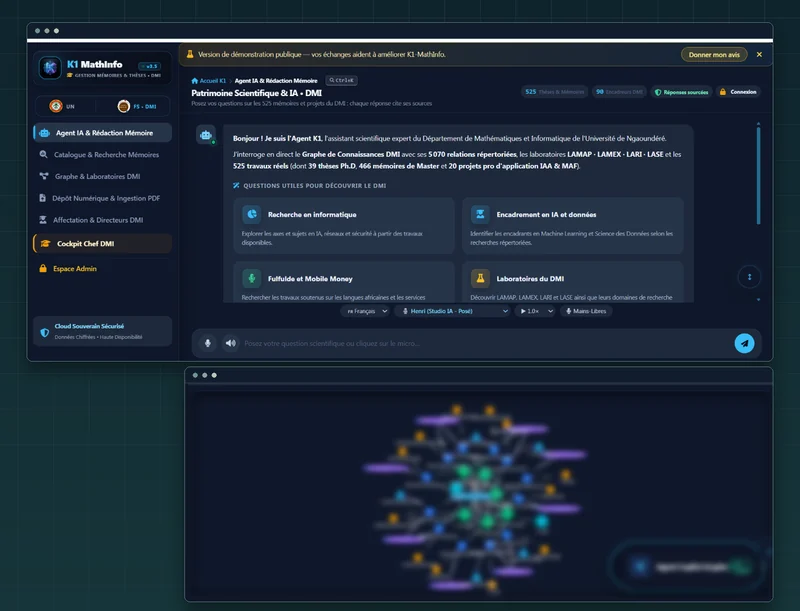

INTERFACE & GRAPHE
La mémoire académique, accessible.
525 travaux · 2010–2026

Agrandir le visuel ↗Interface et détail du graphe · noms du graphe floutés
Des références. Des liens. Des réponses sourcées.
Recherche documentaire & analytique
K1-MathInfo
Rendre explorables seize ans d’archives universitaires : recherche hybride, références, recommandations explicables et entrepôt analytique.
Le besoin
Projet réalisé pour le Département de Mathématiques et Informatique de l’Université de Ngaoundéré : retrouver et relier 525 travaux couvrant 2010–2026.